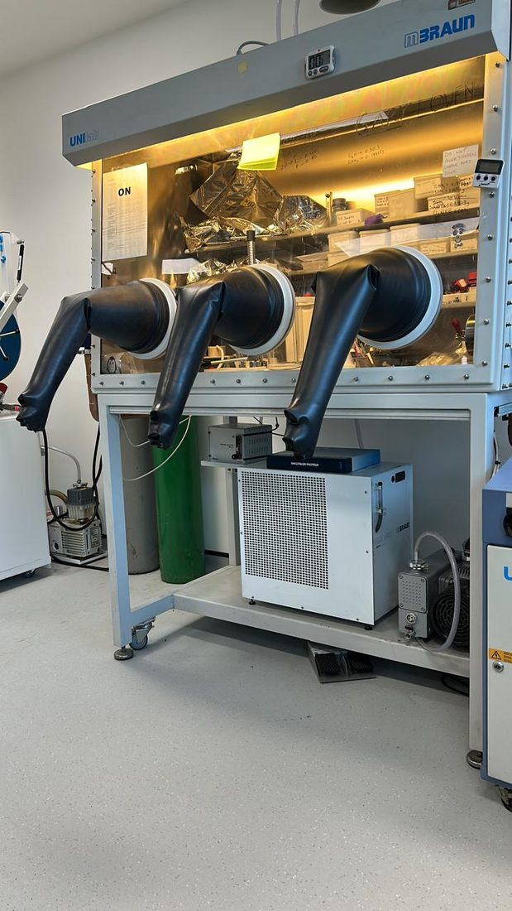
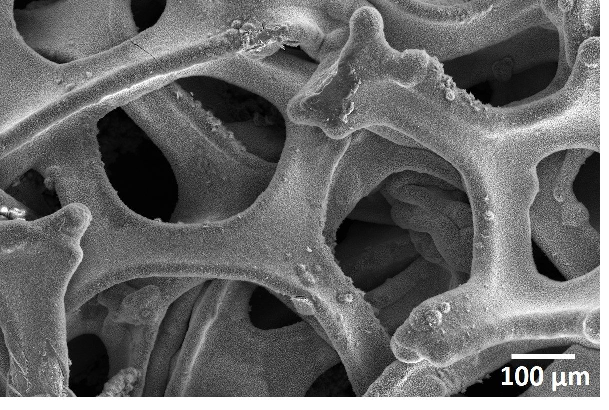

Engineering advanced materials for next-generation energy storage.
Dr. Shilpi Sengupta specialises in advanced battery materials, solid-state electrolytes and functional energy storage devices — from crystal structure and synthesis to working, flexible prototypes.

Hello, I’m Shilpi.
Exploring materials, understanding electrochemistry, and turning ideas into working devices.
I have always been fascinated by how the smallest details of a material can make a big difference to its performance. What happens inside a crystal when ions move through it? How can changing the shape or structure of a material improve its properties? And how can we take something we develop in the laboratory and turn it into a device that actually works?
At the University of Birmingham I work on solid-state electrolytes for lithium-ion and potassium-ion batteries — synthesising ceramic materials such as lithium imide and LTAP-type systems, fabricating pellets and probing their ionic conductivity with electrochemical impedance spectroscopy. My samples are air-sensitive, so my best friends are the glovebox and the dry room.
“The exciting part is not just making a new material. It is understanding it, improving it, and discovering what it can do.”
Read the full story →Three threads, one question: how do ions move?
From electrolyte chemistry to electrode architecture to finished devices — each line of work feeds the next.
Solid-State & Hybrid Electrolytes
Ceramic, polymer and hybrid electrolyte systems with wide electrochemical stability windows for lithium and post-lithium-ion batteries.

Advanced Nanostructured Electrodes
Design and synthesis of transition-metal sulfides and oxides, layered WS2, reduced graphene oxide, carbon nanotubes and porous carbons.

Energy Storage Devices & Prototypes
Assembly and testing of lithium-ion and sodium-ion systems, supercapacitors and flexible solid-state devices.

A flexible hybrid supercapacitor that keeps working when bent.
Interdigitated flexible supercapacitors built from Ti3C2Tx MXene and WS2/rGO/CNT electrodes, paired with ionic-liquid polymer electrolytes with an ultra-wide stability window of up to 5.9 V.


My research explores how materials composition, processing, structure and interfacial chemistry influence ionic transport, electrochemical performance and device stability.Read full biography & research pillars →